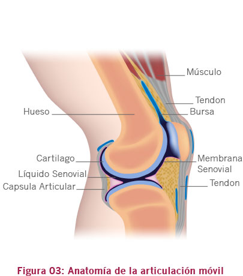

01. Anatomía y Fisiología
B. Sistema articular
Articulaciones móviles o sinoviales
Todas las articulaciones móviles o sinoviales (Figura 03) presentan la misma estructura básica, aunque sean extremamente variables en sus movimientos. Su anatomía básica está compuesta por:
- Huesos;
- Cápsula articular;
- Membrana sinovial;
- Líquido sinovial;
- Ligamentos;
- Estructuras extra-articulares, como músculos, tendones y bursas.
- Cartílago articular.
